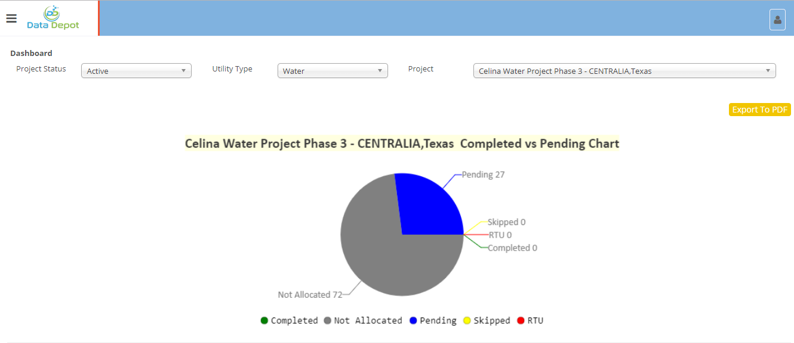
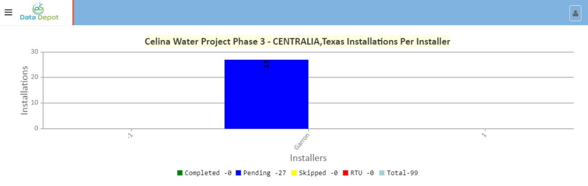
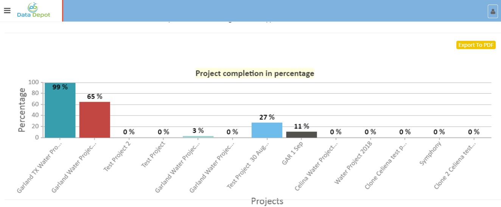
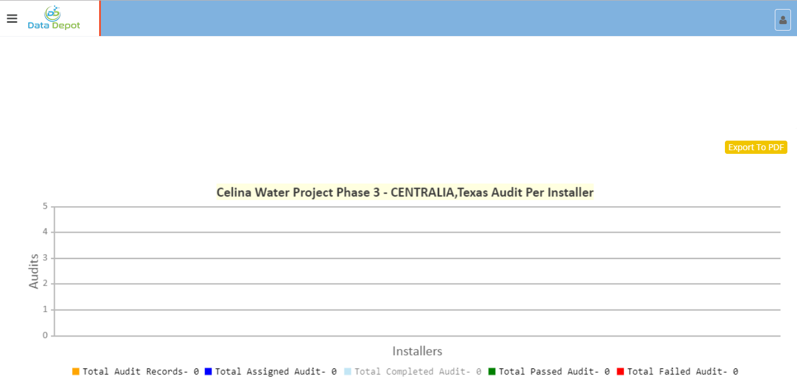

Dashboard
- Different types graphs/charts are displayed on this screen.
- Select the Project Status from the dropdown
- Select the Utility Type from the dropdown
- Select the Project name from the dropdown
Completed visits vs. Pending visits
- This chart display the no of pending, skipped, RTU and Completed visit for the selected project
- User can export the chart by clicking on button.

Installation per installer
- This graph display installer wise count on the basis of visit status for the selected project.
- User can export the graph by clicking on button.

Project Completion in percentage
- This graph displays the completion percentage of all projects
- User can export the graph by clicking on button.

Audit per installer
- This graph displays the count of passed and failed audits of particular installer.
- This graph also indicate the total assigned, total audit record, total completed record
- User can export the graph by clicking on button.

Created with the Personal Edition of HelpNDoc: Full-featured Kindle eBooks generator